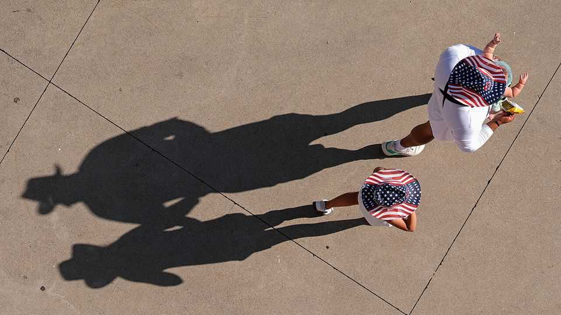

Pro-family proposals offer a glimpse at a post-Trump agenda
Conservative policy circles are mulling ideas to support two-parent households

Sep 17th 2026
The vice-president’s views on families make him a hero to many Americans on the right and a ticking-time bomb to those on the left, wary of his opinions becoming national policy. Over the years J.D. Vance has criticised no-fault divorce and suggested that parents with children should have “more power” at the polls. “Normal Americans”, he has asserted, “want a family policy that doesn’t shunt their kids into crap day care”.
It was no surprise, then, when a small furore erupted this month after the New York Times reported that the White House would extend federal funds for families with children in day care to stay-at-home parents. Though the White House called the report “baseless speculation”, Rosa DeLauro, a Democratic congresswoman, was among those to condemn the idea, arguing that it would “force more parents to compete for the same inadequate pot of money” and “disproportionately hurt single working parents”. Rachel Campos-Duffy, a Fox News presenter, praised the proposal. “I call it putting families first.”
The episode offered a glimpse of a coming fight. A growing number of conservative politicians, staffers and think-tankers are backing not just a pronatalist agenda, to encourage Americans to have babies, but a “pro-family” one, to make it easier to raise them. Ideas range from those popular with Democrats to those explicitly favouring married, heterosexual couples. Donald Trump may advance a few proposals in the remainder of his term, but the debate will almost certainly be elevated by those trying to succeed him.
Historically, Republicans have feared mothers living off the state; that’s one reason that America lacks federal paid maternity leave. To date, the Trump administration’s most direct policy change for American families has been to limit eligibility for health insurance and cut food stamps. At least 1.2m children have lost access so far, through the One Big Beautiful Bill Act (OBBBA) passed last year.
Nevertheless, argues Brad Wilcox of the Institute for Family Studies, a think-tank, there is a generational shift among Republican politicians and their staffers, who are keen to advance social policies beyond restricting abortion. “Middle-aged and older Republicans and conservatives tend to be very sceptical,” Mr Wilcox says, of “real effort to advance family policy”. But younger Republicans are more willing to offer support for families, concerned by the falling birth rate and their interest in serving the party’s new base.
“President Trump won with the support of working people with kids,” Josh Hawley, a Missouri senator, said in 2024 when he proposed increasing the child tax credit. The tax bill “should provide them a big tax cut”. Marco Rubio, the secretary of state, and Mr Vance have also endorsed expanding child tax credits, with Mr Vance telling the anti-abortion movement to be “pro-family and pro-life in the fullest sense”.
Expanding tax credits for families with children is a standard Democratic priority; OBBBA did so modestly. One bipartisan bill, introduced in May, would give a baby bonus to help cover the costs of having a newborn. However other proposals are distinctly conservative. In addition to expanding support for families with a stay-at-home parent, another priority is scrapping any “marriage penalties” in the tax code; combining incomes through marriage risks disqualifying a couple from receiving federal benefits.
For critics on the left, there are a few problems. These include that “expanding” access to support can mean expanding the pool of people eligible for it, as the reported White House proposal does, without making more cash available. Democrats prefer more money for universal child care. Another, related problem is that some proposals are designed to reward only certain types of families.
In January the Heritage Foundation, the conservative think-tank that published Project 2025, released a 70,000 word manifesto. Labelled the “Manhattan Project” of family policy, it endorses now-standard Democratic priorities, such as doubling the child tax credit for under-fours and loosening rules for building new homes.
However, Heritage also laid out that marriage is “the committed union of one man and one woman” and says policies should favour “natural marriage over same-sex and polyamorous relationships, cohabitation, or intentional single parenthood”. Its proposal bemoans no-fault divorce and includes more benefits for those who marry young, have more children and stay at home. It is an effort to “reframe the entire conversation”, says Emma Waters, one of its authors. At a pro-family Heritage event earlier this year Jennifer Galardi, an analyst at the foundation, asked a panel if men with families should be paid more than women, remarking, “as the culture shifts, I am hoping that window…opens”. Another panellist pointed out that this change would be illegal.
The pro-family movement contains a spectrum of views. No one in the Trump administration has yet endorsed the Heritage plan. Patrick Brown of the Ethics and Public Policy Centre, another conservative think-tank, says he would not support the reported White House proposal for stay-at-home parents. In general, though, Mr Brown is encouraged. It is just easy to see how an administration being led by secretary Rubio or vice-president Vance, he says, would “really put more effort into the pro-family stuff.” He and his peers have an agenda ready if they do. ■
Stay on top of American politics with The US in brief, our daily newsletter with fast analysis of the most important political news, and Checks and Balance, a weekly note that examines the state of American democracy and the issues that matter to voters.